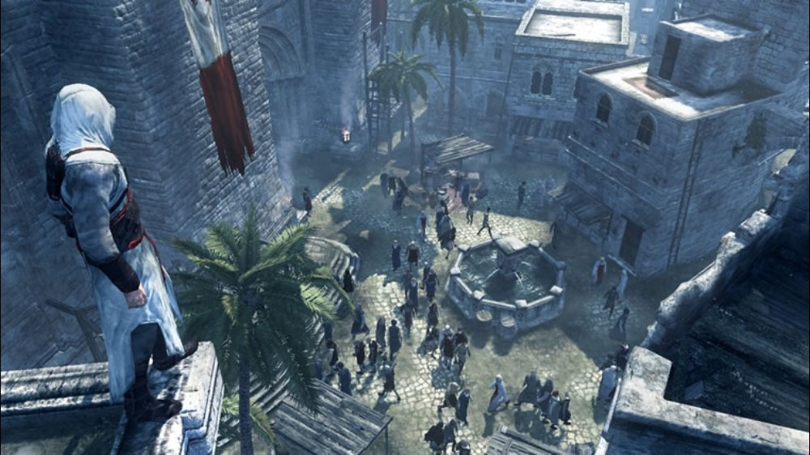

HD Graphics improved on 3D graphics and were popular in the 2010s. There was a push towards realistic graphics, so the games felt more lifelike, immersing players better into gaming worlds. These graphics used more complex shading, texture, and motion capture technology to create their games and lifelike scenes.
Gaming consoles with HD graphics include PlayStation 3 and Xbox 360.
